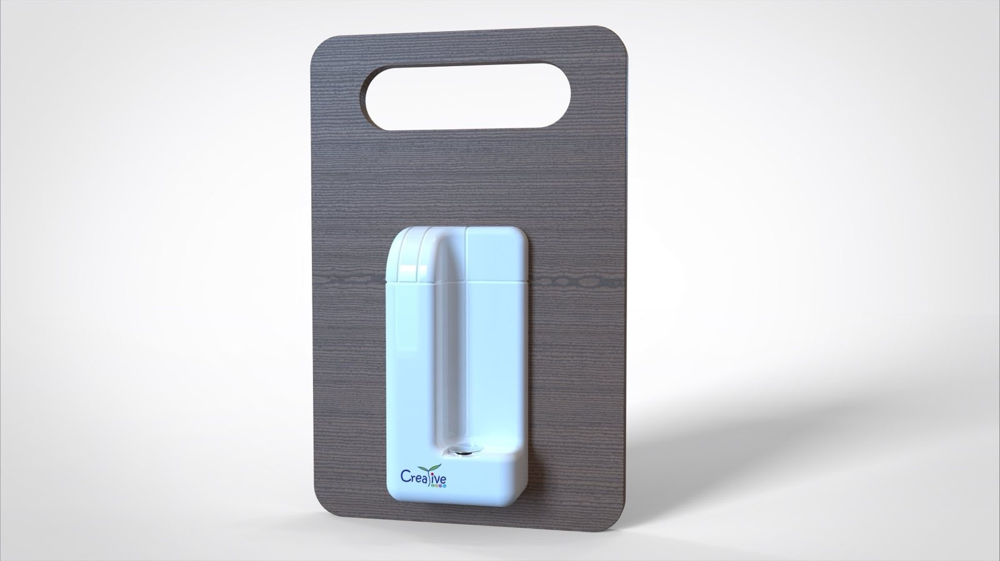
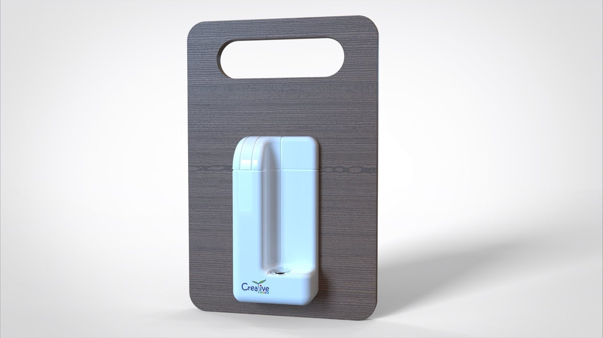

Munio Pouch
Enjoy a Distraction-Free School Day
The Munio Pouch is a lockable fabric pouch designed specifically for school use. Each student places their phone inside the pouch, which is then secured using a dedicated locking mechanism. Students keep the pouch with them throughout the day, but cannot access their phone until it is unlocked by designated unlocking device.
Designed for Real School Life
We understand that every school operates with different routines and schedules. The Munio Pouch integrates smoothly into morning registration, assemblies, lesson transitions, or tutor periods — without requiring building works, installation, or additional storage space.
A Calm, Phone-Free Classroom Without Centralised Phone Collection
Munio Pouch introduces a simple daily routine for students:
Phones go in, the pouch locks, and learning begins.
A respectful way to keep students’ phones safely with them while ensuring
they remain inaccessible during lessons, balancing focus and respect.
Improved Focus
Fewer distractions and a calmer learning environment.
Better Wellbeing
Reduced stress from constant connectivity and social media.
Stronger Social Connections
More face-to-face interaction between students.
Safer School Environment
Lower risk of cyberbullying, misuse, and privacy concerns.
A Practical and Respectful Mobile-Free Learning Solution
Munio Pouch is designed to help schools create a mobile-free learning
environment without removing students’ personal belongings.
Phones are kept securely with students but remain inaccessible
during school hours, encouraging responsibility and healthy
digital boundaries.
Without mobile distractions, classrooms become calmer and more focused.
Students engage more actively, participate fully, and experience
reduced anxiety linked to excessive screen use and social media.
Limiting phone access also strengthens social interaction,
allowing students to communicate face-to-face and develop
stronger interpersonal skills. At the same time, it enhances
safeguarding by reducing exposure to inappropriate content
and online risks.
How Munio Pouch Works
All Mobile Phones and Connected Devices Must Be Kept in a Munio Pouch
To ensure consistent implementation, all phones and connectable devices must be managed in the following way.
This includes phones, smartwatches, Bluetooth earphones, earbuds, and other connectable devices.
- Upon arrival, students place devices in the Munio Pouch and lock it.
- The pouch remains locked for the entire school day.
- Before dismissal, students unlock at the designated unlocking station.
Step-by-step
On arrival, students place their mobile phone into their allocated pouch.
Students close and secure the pouch, keeping it with them for the entire school day.
At the end of the day, students tap the pouch on the unlocking base to retrieve their phone.
 

Mobile-Free School Policy
Policy Rationale
The Mobile-Free School Policy aims to create a more focused and less distracting learning environment, responding to growing concerns within the global education community about the impact of mobile phone use on students.
- Growing concern about constant contactability and frequent use of mobile technology.
- Over-dependence can affect social skills, emotional regulation, and academic performance (e.g. nomophobia).
- Phones add staff workload through conflict and discipline, reducing time for focused learning.
For these reasons, the Munio Pouch System is recommended. It allows students to keep their devices while preventing distraction during school hours.
Frequently Asked Questions (FAQ) from Parents
1. Can my child leave their phone in their schoolbag?
No.
All devices must be placed inside the Munio Pouch to prevent use during lessons.
2. Can my child bring a phone for travelling to and from school?
Yes.
Lock it immediately on arrival. Access only at dismissal.
3. Can I still track my child’s location?
Yes.
Tracking works once the device is retrieved after school.
4. Does this apply to basic (non-smart) phones?
Yes.
The policy applies to all phones and connectable devices.
5. Do senior secondary students also need to use the Munio Pouch?
Yes.
Only permitted in designated areas with teacher approval for learning purposes.
6. What if phones are required for a lesson?
Teachers may use portable unlocking devices where necessary for learning activities.
7. Lost and Replacement Arrangements
Replaced at parent’s expense; otherwise devices must be left at home
About the Munio Pouch System
1. What is the Munio Pouch?
The Munio Pouch is a lockable storage pouch that allows students to keep their phones with them while preventing access during lesson time.
This design reduces separation anxiety and avoids issues related to device storage or security.
2. How does the magnetic lock work?
The pouch contains both a mechanical lock and a magnetic safety mechanism. Once the magnetic lock is engaged, it can only be opened using the school’s authorised unlocking devices.
The school will be equipped with both wall-mounted and handheld unlockers for convenience.
3. Will this cause queues during arrival or dismissal?
No.
Locking and unlocking procedures are very quick, and the school will provide sufficient unlocking stations to minimise waiting time.
Management, Discipline and Special Arrangements
1. Students with SEN requires phone access?
Parents may submit a request to the General Office. The school will assess the situation and make appropriate arrangements based on individual needs.
2. If a Student Forgets Their Munio Pouch
The device will be kept by staff during morning assembly.
The student must complete a detention session after school to retrieve the device.
3. Unauthorised Device Use
Recommended measures include:
- The device will be confiscated immediately.
- The student must attend a disciplinary session at 4:00pm on the same day.
- Parents must collect the device in person.
- Refusal to comply may result in further disciplinary action.
4. Ensuring Daily Compliance
Teachers will remind students during the initial implementation phase.
The school may conduct random checks later, including schoolbag inspections.
5. Parent–Student Communication
Parents may contact the General Office, where staff will relay messages to students.
Students who need to contact parents may seek assistance from the General Office during break or lunchtime.
6. Emergency Situations
Emergency procedures will operate as usual, with staff prioritising student safety.
Restricting phones reduces the risk of parents receiving unverified information that may cause unnecessary panic.
7. Trips and Off-Campus Activities
The teacher-in-charge will decide, based on risk assessment, whether Munio Pouches are required for the activity.
Mobile Pouch vs Mobile Locker
| Category | Mobile Pouch | Mobile Locker |
|---|---|---|
| 🔒 Privacy | Students keep phones sealed; no staff handling | Lower: staff collect/store devices |
| 🙋 Responsibility | Student-managed; reduces conflict | Shifts responsibility to school |
| 📄 Admin Workload | No daily collection/return | High: collect, label, store, return |
| ⚠️ Loss / Damage Risk | Phone stays with student | Higher risk of mix-up/loss/damage |
| ⛑️ Emergency Readiness | On student (inaccessible, but available if needed) | Not on student (requires retrieval) |
| 💰 Cost | Parent purchase; minimal school equipment | Locker purchase + installation + maintenance |
Resources & Downloads
Parent Survey Template
Survey for collecting parent feedback on mobile-free school arrangements.
Roll Out for Mobile-Free School Arrangements
English Version
Chinese Version
Parents Agreement for Mobile-Free School Arrangements
English Version
Chinese Version
Global Trend
Many regions have already adopted phone-free school policies.
- China, Netherlands, Finland and Italy
- Hundreds of US and UK schools
- France (national ban for students under 15)
Reported outcomes of these policies include improved student behaviour, better academic focus, and reduced stress levels.
Percentage of education systems with laws and policies banning smartphone use in school, by SDG region, end of 2024.
Source: GEM Report PEER profiles, https://www.education-profiles.org
China
China’s Ministry of Education states that primary and secondary students should not bring mobile phones to school, and any exception requires written parental consent; even with consent, phones must be handed over and may not be used during school hours. The policy aims to reduce distraction, protect students’ eyesight and wellbeing, and improve focus in class.
Source: Ministry of Education of the People’s Republic of China
United Kingdom
Secondary schools with an effective mobile-phone ban were more than twice as likely to be rated ‘Outstanding’ by Ofsted, and their students achieved GCSE results equivalent to 1–2 grades higher (Progress 8 +0.13 to +0.25). Although the report does not claim causation, it finds a clear correlation between strong phone-free policies and better school performance.
Source: Policy Exchange (2024), “Disconnect”
Hong Kong
Look Up Hong Kong states that delaying children’s access to smartphones and social media protects their mental and physical wellbeing, allowing them to grow up with fewer digital distractions, richer real-world relationships, and stronger curiosity and creativity. Their survey shows strong public support: 87% of parents would delay smartphones until at least age 14, 94% support setting social-media age limits at 16, and 92% would choose a smartphone-free school for their children.
Source: Look Up Hong Kong
Singapore
Singapore to toughen ban on smartphones, smartwatches in secondary schools from 2026 The ministry said the stricter rules aim to improve students' well-being Singapore is tightening its grip on student smartphone use, requiring secondary school pupils to keep devices locked away throughout the entire school day starting January 2026—not just during lessons. The Ministry of Education (MOE) announced on Sunday, November 30, that phones and smartwatches must now stay in lockers or bags during recess, co-curricular activities and remedial classes, though schools can grant exceptions 'where necessary.'
Source: Singapore Ministry of Education, 30 November 2025
Contact & Demo Request
Your Details
Our Information
Creative Spot Learning Materials Ltd.
Address
Unit 18, 14/F Vanta Industrial Centre, No.21–33 Tai Lin Pai Road, Kwai Chung NT
Telephone/ Fax
(+852) 3422 8725 / (+852) 277706060
Website
info@creativespot.com.hk